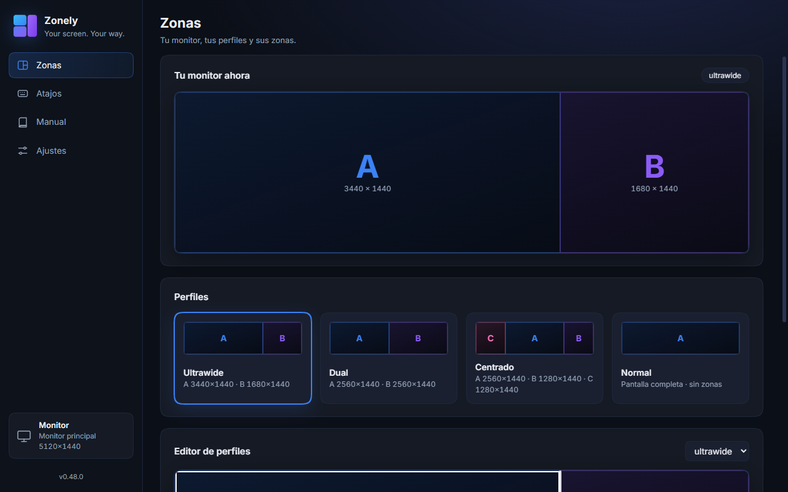
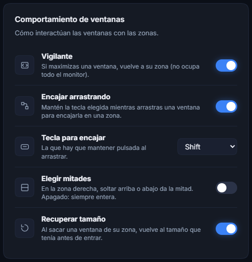
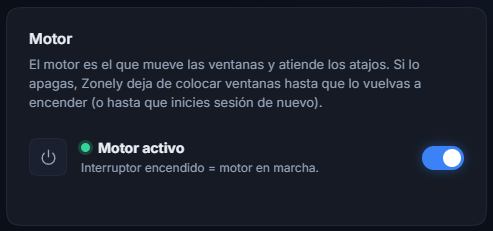
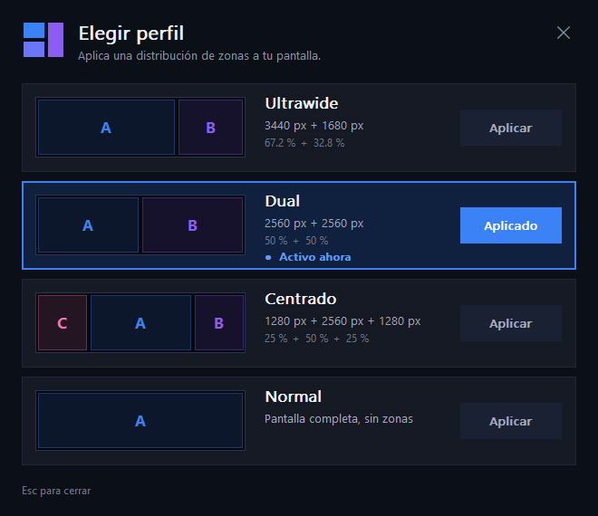
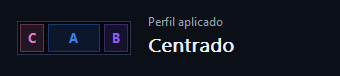
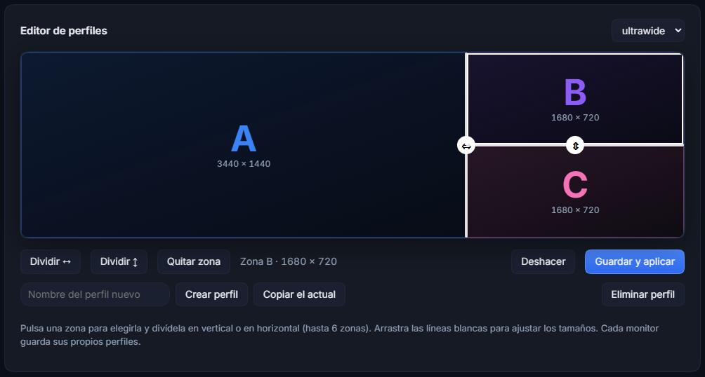
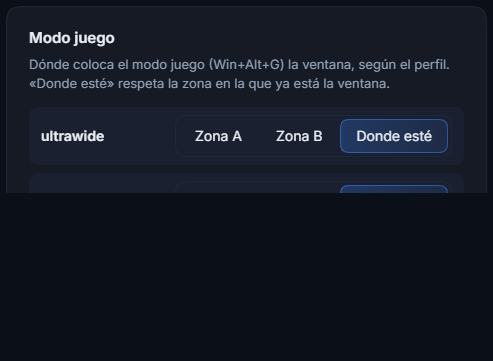
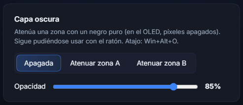
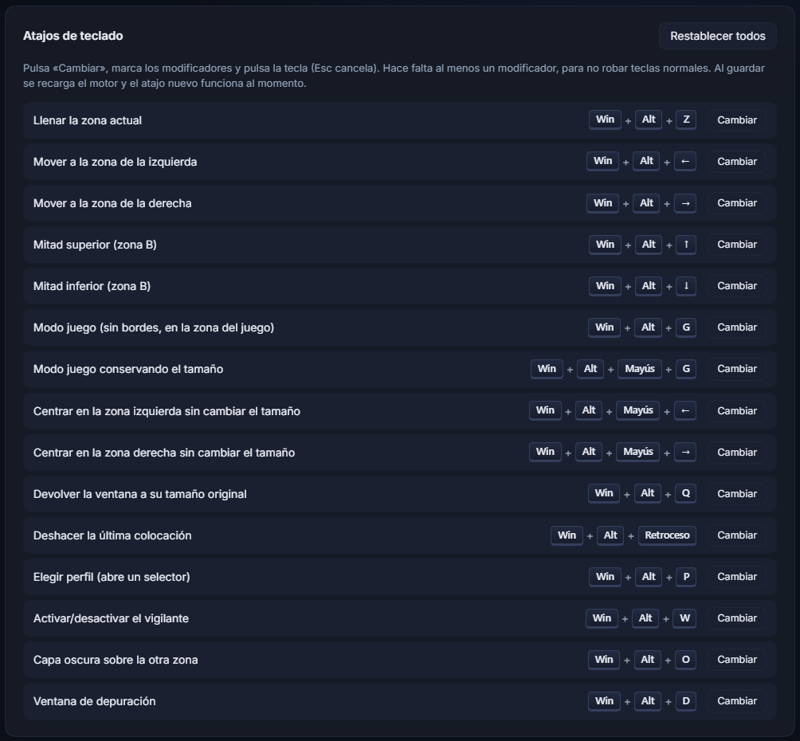

Dos pantallas en un solo monitor
Zonely divide tu monitor (pensado para pantallas ultrawide, como un 5120×1440) en zonas independientes, para jugar en una mitad mientras usas Discord, el navegador o OBS en la otra, como si fueran dos monitores.
01Qué es y cómo funciona
La aplicación tiene dos piezas que trabajan juntas:
- El motor (el programa
ZonelyEngine) vive en segundo plano, casi sin gastar recursos. Es quien mueve las ventanas, responde a los atajos y vigila los maximizados. Es lo único que tiene que estar siempre abierto. - El panel es la ventana con la interfaz visual. Sirve para ver el estado y cambiar ajustes con el ratón. Puedes cerrarlo mientras juegas: el motor sigue funcionando.
02Primeros pasos
Instalar
- Descarga
Zonely-Setup-<versión>.exede la página de Releases del proyecto y ábrelo. - Si Windows muestra «Windows protegió su PC», pulsa Más información → Ejecutar de todas formas. Es normal: el instalador no está firmado con un certificado de pago.
- Sigue el asistente (no pide permisos de administrador por defecto). Al terminar se abre el panel y arranca el motor.
Arrancar
- El motor se inicia solo con Windows. Si no está en marcha, enciéndelo desde el panel en Ajustes → Motor.
- El panel se abre desde el menú Inicio o el escritorio, buscando «Zonely».
- Cuando el motor funciona, aparece un icono en la bandeja del sistema (junto al reloj). Haz clic derecho sobre él:
| Entrada del menú | Qué hace |
|---|---|
| Perfiles | Se despliega con los perfiles de zones.ini; el activo va marcado y un clic lo aplica (con el aviso de «Perfil aplicado»). |
| Vigilante de maximizado | Activa o desactiva el vigilante (marcado = activo). |
| Pausar atajos | Suspende todos los atajos hasta que lo vuelvas a pulsar. Útil si un juego usa las mismas teclas. |
| Salir | Cierra el motor y devuelve a su estado las ventanas que estuvieran en modo juego. |
Tu primera prueba, en 1 minuto
- Abre el Bloc de notas y haz clic en él para que sea la ventana activa.
- Pulsa Win+Alt+Z: la ventana se estira hasta ocupar exactamente la zona A (3440 px de ancho).
- Pulsa Win+Alt+→: salta a la zona B.
- Pulsa Win+Alt+↑: ocupa solo la mitad de arriba de la zona B.
03El panel de control
El panel tiene una barra lateral con tres secciones y el acceso a este manual:

| Sección | Qué hay | Capítulo |
|---|---|---|
| Zonas | Dibujo en vivo de tu monitor, perfiles y editor de perfiles (crear, dividir, eliminar). | 4 |
| Atajos | Ver y cambiar las combinaciones de teclado. | 11 |
| Ajustes | Comportamiento de las ventanas (vigilante, encaje con la tecla que elijas, mitades, recuperar tamaño), idioma, modo juego, capa oscura y exclusiones. | 6, 7, 8 |


04Zonas y perfiles
Una zona es un rectángulo fijo del monitor. Hay dos, A (izquierda) y B (derecha), y su reparto lo define el perfil activo. Vienen dos perfiles:
Elegir el monitor
Si tienes varios monitores, abajo a la izquierda del panel pone Monitor, con el nombre que da el sistema a tu pantalla. Púlsalo para ver los que tienes conectados y elige a cuál se aplican las zonas. Las zonas de todos los perfiles se reajustan al tamaño del monitor nuevo, y el vigilante, el encaje con Shift y los atajos trabajan sobre ese monitor (en los demás, maximizar y arrastrar siguen siendo normales). Necesita el motor encendido para ver la lista.
Cambiar de perfil
- Win+Alt+P abre un selector con una fila por perfil: su dibujo, el reparto en píxeles y en porcentaje, y un botón Aplicar. Un clic en cualquier parte de la fila lo aplica al instante (el actual aparece como «Aplicado», con borde azul); Esc o la ✕ lo cierran.
- En el panel, haz clic en una tarjeta de Perfiles; la que está activa tiene el borde azul.
- En el icono de la bandeja, Perfiles y el que quieras.
Zonely recuerda el último perfil que usaste y lo vuelve a aplicar al reiniciar el ordenador o el motor.

Al elegir un perfil desde el selector aparece, abajo en el centro de la pantalla, un aviso breve con su dibujo y su nombre. No roba el foco ni bloquea el ratón, y desaparece solo en un par de segundos.

El perfil «centrado» pone una pantalla 16:9 (2560×1440) en el centro, que es la zona A (la del modo juego), y una zona a cada lado con lo que sobra: B a la derecha y C a la izquierda (1280 px cada una). Con tres zonas, Win+Alt+←/→ pasa la ventana a la zona vecina, y Win+Alt+Mayús+←/→ la centra en ella sin cambiar el tamaño. La capa oscura atenúa todas las zonas menos la de la ventana activa. Se puede editar y dividir más con el editor de perfiles (más abajo).
El perfil «normal» es la pantalla de siempre, sin zonas: los atajos de colocación, el encaje con Shift, el vigilante de maximizado y la capa oscura no hacen nada (maximizar vuelve a ser maximizar). Úsalo cuando no quieras que el gestor toque tus ventanas; tiene una sola zona (A); si la divides en el editor de perfiles, pasa a ser un perfil con zonas.
También puedes cambiar de perfil desde el icono de la bandeja (Perfiles). Zonely recuerda el último perfil que usaste y lo vuelve a aplicar al reiniciar el ordenador o el motor.
Cambiar de perfil no mueve las ventanas que ya están colocadas: afecta a las siguientes acciones. Para recolocar una ventana, usa Win+Alt+Z.

Crear y editar perfiles
El Editor de perfiles (en la vista Zonas) sirve para cambiar cualquier perfil o crear uno nuevo, con divisiones verticales y horizontales a tu gusto (hasta 6 zonas, A a F):
- Elige el perfil en el desplegable. Pulsa una zona para seleccionarla (se marca con un borde blanco).
- Dividir ↔ la parte en dos, una al lado de la otra; Dividir ↕, una encima de la otra. Se puede dividir una zona ya dividida, tantas veces como quieras.
- Arrastra las líneas blancas para ajustar los tamaños (saltan de 10 en 10 px; cada zona tiene un mínimo de 300×200 px). Quitar zona elimina la elegida y la contigua ocupa su sitio; las letras se renombran para seguir seguidas.
- Guardar y aplicar escribe el cambio en
zones.iniy el motor lo recarga al instante. Deshacer descarta lo que no hayas guardado.
Para un perfil nuevo, escribe el nombre y pulsa Crear perfil (empieza con una sola zona, la pantalla entera) o Copiar el actual (parte de una copia del perfil que estás viendo). Eliminar perfil pide una segunda pulsación para confirmar; siempre tiene que quedar al menos un perfil.

Con más de dos zonas, Win+Alt+←/→ mueven la ventana a la zona vecina siguiendo el orden de izquierda a derecha (y de arriba abajo si están apiladas), y las mitades de arriba y de abajo (↑/↓) siguen siendo las de la zona B. El encaje arrastrando, el vigilante, la capa oscura y los selectores usan siempre la zona que esté bajo la ventana o el cursor, sea cual sea el reparto.
Cada monitor guarda sus propios perfiles y cuál usa: si en un monitor quieres «normal» y en otro «ultrawide», elige el monitor y deja ahí el perfil que quieras; el otro no cambia.
05Mover y encajar ventanas
Hay tres formas de colocar una ventana. Usa la que te resulte más cómoda:
A) Con atajos de teclado
| Atajo | Qué hace |
|---|---|
| Win+Alt+Z | Llena la zona en la que está la ventana (la «maximiza» sin pasar de la zona). |
| Win+Alt+← | La manda a la zona A, ocupándola entera. |
| Win+Alt+→ | La manda a la zona B, ocupándola entera. |
| Win+Alt+↑ | En la zona B: mitad de arriba. |
| Win+Alt+↓ | En la zona B: mitad de abajo. |
| Win+Alt+Mayús+G | Modo juego conservando el tamaño interior (sin bordes, centrado en la zona del modo juego). |
| Win+Alt+Mayús+← → | Centra la ventana en la zona A / B sin cambiar su tamaño (para juegos que no admiten el tamaño de la zona). |
| Win+Alt+Retroceso | Deshacer la última colocación: la ventana vuelve a su posición y tamaño anteriores (hasta 20 pasos). |
B) Arrastrando con Shift (como FancyZones)
La tecla se puede cambiar (Shift, Ctrl o Alt) en Ajustes → Tecla para encajar.
- Empieza a arrastrar una ventana por su barra de título.
- Sin soltar el botón, mantén pulsada Shift. Aparecen las zonas sobre el monitor, y la que vas a elegir se ilumina en blanco. Por defecto solo puedes elegir la zona de la izquierda o la de la derecha, enteras.
- Suelta el botón del ratón: la ventana encaja en esa zona.
[Snap] de zones.ini; se activa o desactiva desde el panel. Las mitades (arriba/abajo de la zona B) no vienen activadas: se habilitan con el interruptor «Permitir elegir mitades» (o Halves=1 en [Snap]); con él apagado, soltar en la zona B siempre da la zona entera.C) Deshacer, centrar y recuperar el tamaño original
- Win+Alt+Retroceso deshace la última colocación: la ventana vuelve a su sitio y tamaño anteriores (hasta 20 pasos).
- Win+Alt+Mayús+← → centra la ventana en la zona A o B sin cambiarle el tamaño.
- Al salirse de una zona recupera su tamaño. Cuando el motor coloca una ventana en una zona (atajo, Shift+arrastrar o vigilante), anota el tamaño que tenía antes de entrar. Si luego la sacas de esa zona (la arrastras fuera o la estiras más allá), al soltar vuelve a ese tamaño, colocada donde tienes el cursor. Se apaga con el interruptor «Devolver la ventana a su tamaño original» (
RestoreOnLeave=0en[General]). No actúa sobre ventanas maximizadas, minimizadas ni en modo juego.
06El vigilante
Cuando maximizas una ventana con el botón de la esquina o con Win+↑, Windows la estira a los 5120 px. El vigilante lo detecta (revisa la ventana activa unas 6 veces por segundo) y la devuelve a su zona.
Qué ventanas deja en paz
- Las del sistema (escritorio, barra de tareas, menú Inicio, Alt+Tab).
- Las que no tienen barra de título (pantalla completa de verdad o borderless): no son «maximizadas» normales.
- Las que estén en modo juego (Win+Alt+G).
- Las que añadas a la lista de Exclusiones (por proceso o por clase de ventana).
- Los juegos de la lista
Games=de[Exclusions]enzones.ini(por defectoRainbowSix.exe): ni el vigilante, ni el encaje con Shift, ni la restauración de tamaño los tocan nunca. Mover o redimensionar un juego en marcha puede soltarle el ratón o chocar con su anti-cheat. Los atajos que pulses tú sí funcionan sobre ellos. - Si una app se vuelve a maximizar sola más de 4 veces en 3 segundos, el vigilante la ignora para no pelearse con ella.

obs64.exe) o usa Excluir la última ventana usada para copiarlo automáticamente.El vigilante reacciona en el mismo instante en que maximizas y quita a esas ventanas la animación de maximizar, para que la ventana vaya directa a su zona sin pasar por pantalla completa.
Activar o desactivar: Win+Alt+W, el interruptor del panel, o la entrada «Vigilante de maximizado» del icono de la bandeja.
07Jugar con una zona
Este es el uso principal: el juego en la zona A (3440×1440) y tus otras apps en la zona B. Tienes que conseguir que el juego ocupe solo la zona A.
Si el juego solo ofrece resoluciones que no son la de la zona, o dibuja barras negras por dentro y el ratón queda desplazado, no lo redimensiones. Ponlo en modo Ventana con una resolución que sí admita (por ejemplo 2560×1080 o 1920×1080) y usa Win+Alt+Mayús+←: solo lo mueve y lo centra en la zona A, conservando su tamaño. Si el juego se empeña en usar el escritorio completo (5120×1440) en «sin bordes», esta app no puede evitarlo.
Modo juego (Win+Alt+G)
Win+Alt+G quita los bordes y la barra de título de la ventana activa y la deja exactamente en la zona del modo juego. Si lo pulsas otra vez, la ventana vuelve a su estado anterior (bordes, tamaño y posición).
Por defecto esa zona es la zona en la que ya está la ventana. Se puede fijar por perfil (A, B o C) en Ajustes → Modo juego, o con GameZone= en la sección del perfil de zones.ini.

Comprobar qué hace realmente el juego (depuración)
Con el juego en primer plano, pulsa Win+Alt+D. Aparece una ventanita en la zona B (sin quitarle el foco al juego) con el proceso, la posición y el tamaño reales, y se actualiza sola. La última línea te dice si coincide exactamente con la zona o en cuántos píxeles difiere. Pulsa el atajo otra vez para cerrarla.
| Si ves… | Significa |
|---|---|
| ✔ coincide con la zona | Todo bien: el juego respeta 3440×1440. |
| ✘ difiere N × M px | El juego cambió su tamaño. Revisa su modo de ventana y su resolución. |
| «SIN barra de título» | Está en borderless (lo normal en modo juego). |
| «No puedo leer esta ventana» | Probablemente anti-cheat o programa ejecutado como administrador. |
08Capa oscura
Pone un velo negro sobre una zona para que no te distraiga mientras juegas en la otra. En un OLED, el negro puro apaga los píxeles. El velo no bloquea el ratón: puedes seguir usando lo que hay debajo.
- Win+Alt+O: enciende la capa oscura sobre la zona donde no está la ventana activa. Púlsalo otra vez para apagarla.
- En el panel puedes elegir Atenuar zona A, Atenuar zona B o Apagada, y regular la opacidad con el deslizador (0 % no hace nada; 100 % es negro total).
- La opacidad se guarda en
[Dim] Opacitydezones.ini.

09Archivos de configuración
Casi todo se ajusta desde el panel, pero todo vive en un archivo de texto, zones.ini, en la carpeta %APPDATA%\Zonely (pega esa ruta en el Explorador de archivos). Al instalar una versión nueva, tus ajustes se conservan. Puedes editar el archivo a mano: Zonely lo detecta solo (en un par de segundos) y aplica los cambios, conservando el perfil y los interruptores. Si el archivo tiene un error, se queda la configuración anterior y el motivo aparece en el registro. En esa carpeta también están logs (el registro de actividad) e ipc (la comunicación entre el panel y el motor).
zones.ini
[General] Profile=ultrawide ; perfil al arrancar: ultrawide | dual | centrado | normal RestoreOnLeave=1 ; 1 = al salirse de una zona, la ventana recupera su tamaño original [Monitor] Width=5120 ; tamaño del escritorio (solo valida las zonas) Height=1440 [Profile.ultrawide] ; zonas: x, y, ancho, alto A=0,0,3440,1440 B=3440,0,1680,1440 [Profile.dual] A=0,0,2560,1440 B=2560,0,2560,1440 [Profile.centrado] ; 3 zonas: A = centro 16:9, B = derecha, C = izquierda A=1280,0,2560,1440 B=3840,0,1280,1440 C=0,0,1280,1440 [Profile.normal] ; sin B = pantalla normal, sin zonas A=0,0,5120,1440 [Dim] Opacity=85 ; 0-100 [Snap] Enabled=1 Key=Shift ; Shift | Ctrl | Alt Halves=0 ; 1 = permitir elegir mitades al arrastrar (zona B) [Watcher] Enabled=1 IntervalMs=150 ; cada cuánto mira la ventana activa (mínimo 50) [Exclusions] Processes=obs64.exe,vlc.exe Classes= Games=RainbowSix.exe ; juegos que el vigilante, el encaje y la restauración nunca tocan
Los perfiles son las secciones [Profile.nombre]: puedes añadir más copiando una. Si algo está mal escrito (una zona que se sale del monitor, por ejemplo), el motor te lo dice al arrancar con un mensaje de error.
10Si algo falla
Los atajos no hacen nada
- Mira el icono de la bandeja: ¿está «Pausar atajos» marcado? Quítalo.
- ¿En Ajustes → Motor pone «Motor detenido»? Enciende el interruptor.
- Win+Alt+G puede chocar con la barra de juegos de Xbox (ver capítulo 7).
- Si la ventana activa es una app ejecutada como administrador, el motor no puede moverla: ejecuta el motor también como administrador.
El juego no respeta los 3440×1440
Abre la ventana de depuración (Win+Alt+D) con el juego en primer plano. Si dice que difiere, el juego cambia su propio tamaño: ponlo en ventana sin bordes y a 3440×1440 desde sus opciones. Con pantalla completa exclusiva o con anti-cheat estricto no hay solución con esta app.
Una ventana se maximiza a 5120 px
Comprueba que el vigilante está activado (interruptor del panel o icono de la bandeja) y que la app no está en la lista de Exclusiones. Las ventanas sin barra de título se consideran pantalla completa y no se tocan.
Tras cambiar zones.ini se pierde algo
Al aplicar los cambios, Zonely conserva el perfil, los interruptores, la capa oscura, el modo juego y los tamaños originales apuntados. Si algo no vuelve, cierra y abre Zonely desde la bandeja (Salir) y vuelve a arrancarlo.
Una ventana quedó mal colocada o sin bordes: cómo la recupero
- Modo juego: pulsa Win+Alt+G otra vez. Vuelve a su estilo, posición y tamaño anteriores.
- Movida o redimensionada (atajo, Shift+arrastrar, vigilante): pulsa Win+Alt+Retroceso () y vuelve a su sitio anterior; repítelo para ir más atrás. Si la sacaste de su zona, ya recupera sola su tamaño original.
- Zona oscurecida: Win+Alt+O o «Apagada» en el panel.
- Aplicar cambios de zones.ini no afecta al modo juego: el estado anterior se conserva y se sigue restaurando con Win+Alt+G. Al salir del motor (bandeja → Salir), las ventanas en modo juego también se restauran.
Quiero desinstalar Zonely
Desde Configuración → Aplicaciones → Aplicaciones instaladas → Zonely → Desinstalar. Se quita el programa y el arranque con Windows, pero no se borran tus ajustes: están en %APPDATA%\Zonely, y puedes borrar esa carpeta a mano si no los quieres.
Límites que no se pueden saltar
- Pantalla completa exclusiva: el juego controla el monitor entero.
- Anti-cheat estricto: puede bloquear cualquier cambio en su ventana. La app no intenta saltárselo.
- Programas como administrador: solo se pueden mover desde un motor también elevado.
11Chuleta de atajos
Cambiar los atajos
Todos los atajos se pueden cambiar desde el panel, en la sección Atajos. Pulsa Cambiar en la acción que quieras, marca los modificadores (Win, Alt, Ctrl, Mayús) y pulsa la tecla; después Guardar. El atajo nuevo funciona al momento, sin reiniciar nada.

- Hace falta al menos un modificador, para no quitarle teclas normales al resto de programas.
- No se permiten dos acciones con el mismo atajo.
- Si dos atajos chocan en
zones.inio uno no es válido, el motor usa el de fábrica y lo avisa en la propia fila del atajo. - Algunos atajos de Windows tienen prioridad (por ejemplo los que usa la barra de juegos de Xbox); si uno no responde, prueba otra combinación.
Atajos de fábrica
| Atajo | Acción |
|---|---|
| Win+Alt+Z | Llenar la zona actual |
| Win+Alt+← → | Mover a la zona de la izquierda / derecha |
| Win+Alt+↑ ↓ | Mitad de arriba / abajo (zona B) |
| Shift+ arrastrar | Encajar en una zona al soltar |
| Win+Alt+G | Modo juego (sin bordes, en la zona del juego) / restaurar |
| Win+Alt+P | Elegir perfil (abre un selector) |
| Win+Alt+W | Activar/desactivar el vigilante |
| Win+Alt+D | Ventana de depuración |
| Win+Alt+O | Capa oscura sobre la zona que no es la activa |
| Win+Alt+Mayús+G | Modo juego conservando el tamaño interior (sin bordes, centrado en la zona del juego) |
| Win+Alt+Mayús+← → | Centrar en la zona izquierda / derecha sin cambiar el tamaño |
| Win+Alt+Retroceso | Deshacer la última colocación |
| Win+Alt+Q | Devolver la ventana activa a su tamaño original (aunque la hayas movido muchas veces) |
Manual de Zonely. Esta página se puede imprimir o guardar como PDF desde el navegador (Ctrl+P).